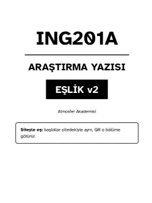
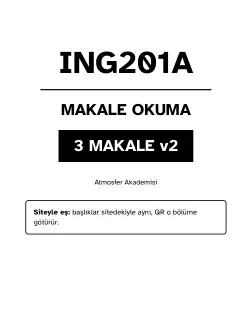
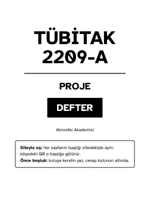
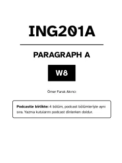

Defterler: PDF ile eş zamanlı
- Üç Araştırma defteri: kapak, sayfa sayısı, reMarkable'daki adı
- Her site bölümünün defterdeki sayfası
- Ders kitaplığının soru-çözüm PDF'leri
ING201A eşlik defteri

- 146 sayfa · reMarkable için
- reMarkable'daki adı
ING201A_ESLIK_ARASTIRMA_v2 - Eş zamanlı ING201A sayfası
Sayfa eşlemesi
Makale okuma defteri

- 73 sayfa · reMarkable için
- reMarkable'daki adı
ING201A_MAKALE-OKUMA_v2 - Eş zamanlı Makaleler sayfaları
Sayfa eşlemesi
2209 proje defteri

- 182 sayfa · reMarkable için
- reMarkable'daki adı
TUBITAK2209_PROJE-DEFTERI - Eş zamanlı Projem sayfası
ING201A W8 · Paragraf A — podcastlerle eş zamanlı

- 26 sayfa · podcast bölümleriyle eş zamanlı (site ile değil)
- reMarkable'daki adı
ING201A_W8_PARAGRAF-A_v3
Ders kitaplığı: soru-çözüm PDF'leri
Her PDF'in çevrimiçi eş zamanlı sayfası Ders Kitaplığı'nda.
| Ders | Sayfa | Web | |
|---|---|---|---|
| MTO 229 / 342E Bulut ve Yağış Fiziği | 407 s. | PDF ↗ | Eş zamanlı sayfa ↗ |
| MTO 316 Hidrometeoroloji | 381 s. | PDF ↗ | Eş zamanlı sayfa ↗ |
| MTO 323 Atmosfer Kimyası | 363 s. | PDF ↗ | Eş zamanlı sayfa ↗ |
| MTO 302E Sinoptik Meteoroloji — Harita Analizi ve SYNOP | 151 s. | PDF ↗ | Eş zamanlı sayfa ↗ |
| MTO 303E Hesaplamalı Akışkanlar Dinamiği (CFD) | 435 s. | PDF ↗ | Eş zamanlı sayfa ↗ |